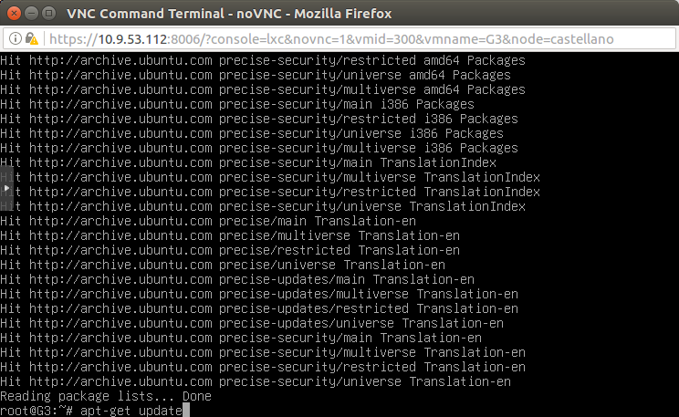
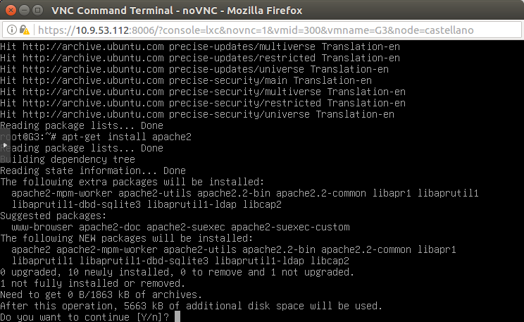
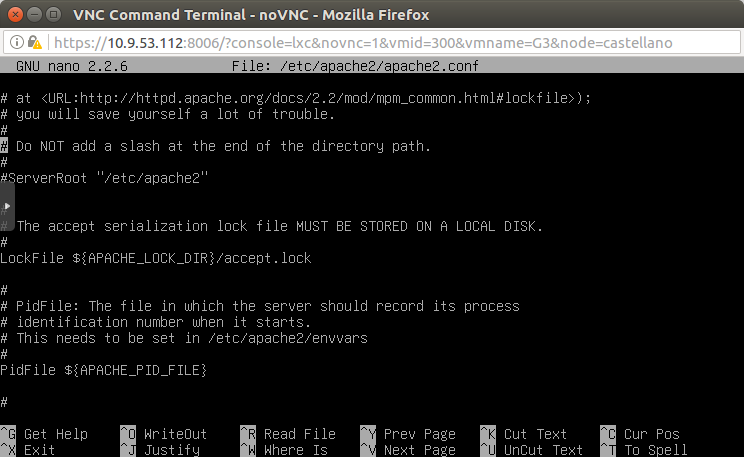
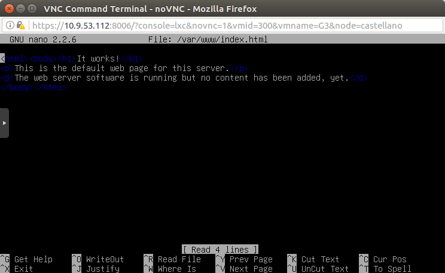
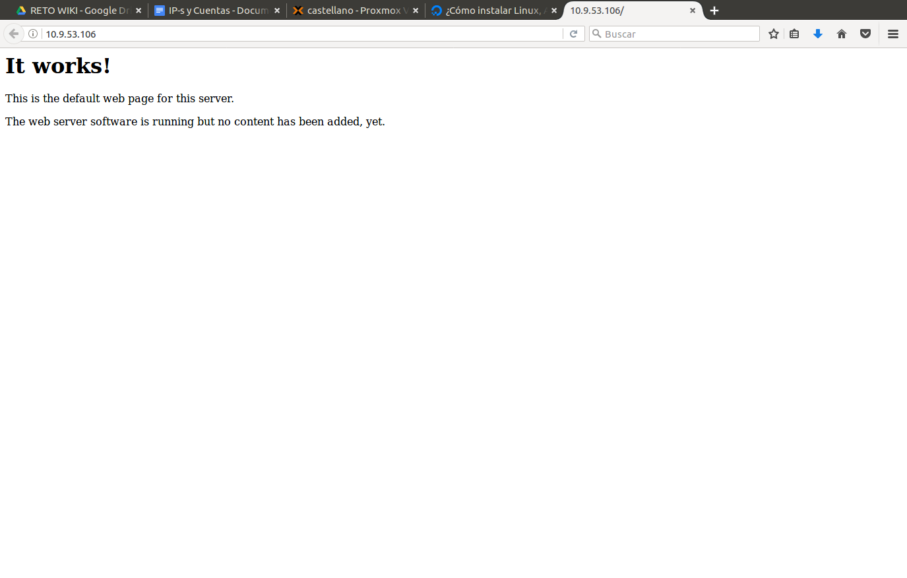
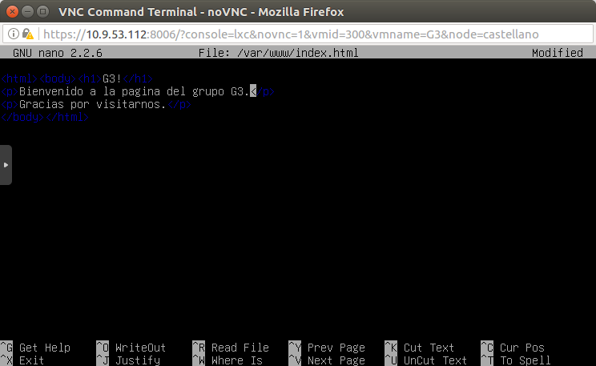

Apache
- Para comenzar a instalar APACHE primero debemos de actualizar los repositorios:
apt-get update  - Una vez actualizados, pasaremos a instalar apache con el comando
apt-get install apache2  - Cuando ya está instalado comprobamos el fichero de configuración con la siguiente orden
nano /etc/apache2/apache2.conf  - Una vez comprobado, veremos la index que viene por defecto
nano /var/index/www/index.html  - Accedemos con el navegador a nuestra IP para comprobar la index. 
- La editaremos dándole la apariencia que deseemos.  A
- Finalmente, desde el navegador accederemos a nuestra IP para comprobar la página que hemos creado.